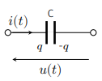
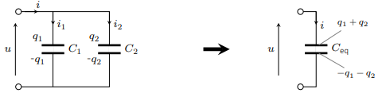
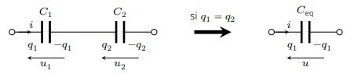
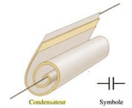
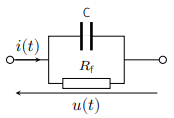
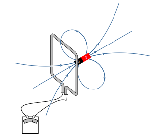
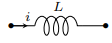

Un condensateur est l’association de deux conducteurs en influence totale, appelés
armatures. Soumis à une tension électrique constante \(U\), le condensateur accumule au
niveau de ses armatures des charges électriques de signe opposé \(Q\) et \(-Q\) telles que
\(Q = CU\). On admettra cette relation également vérifiée en régime variable.
Dans le cadre de l’approximation des régimes quasi-stationnaires, un condensateur idéal
répond à la caractéristique :
$$
\quad q(t) = C u(t)
$$
où \(C\) est la capacité du condensateur. Celle-ci s’exprime en farad (F) ; elle
dépend de la géométrie du condensateur et de la nature de l’isolant placé entre les
armatures.
On a donc en convention récepteur :
$$
\quad i(t) = \frac{dq}{dt} = \frac{du(t)}{dt}
$$

Schéma électrique du condensateur idéal.
Le comportement du condensateur idéal obéit au principe de superposition. En effet, si
\(i_1\) est la réponse à la tension \(u_1\) et \(i_2\) celle à la tension \(u_2\), alors
\(i_1+ i_2\) est la réponse à la tension \( u = u_1 + u_2\).
En ce sens, le condensateur est un dipôle linéaire.
En régime continu, toutes les grandeurs étant stationnaires, la loi régissant le
condensateur devient \(i_0\). Par conséquent, le condensateur se comporte comme un
interrupteur ouvert en régime continu.
Le condensateur chargé agit comme un réservoir d’énergie qu’il peut fournir au reste du
circuit. La puissance que reçoit un condensateur idéal s’écrit :
$$
\quad \mathcal{P} = ui = Cu\frac{du}{dt} = \frac{dW_E}{dt}
$$
Lorsque l’énergie stockée décroit, \(\mathcal{P} \lt 0 \) : le condensateur se
décharge en fournissant de l’énergie au reste du circuit, agissant ainsi comme un
générateur.
Le fait que le condensateur stocke une énergie sous forme électromagnétique a une
conséquence importante en électrocinétique. Vu que l’énergie d’un système ne peut peut pas
varier de façon discontinue, la charge et la tension aux bornes d’un condensateur doivent
varier continûment.
Association de condensateurs
Association en parallèle
Soient deux condensateurs de capacité \(C_1\) et \(C_2\) montés en parallèle. On suppose que
ces condensateurs sont suffisamment éloignés pour pouvoir négliger toute influence mutuelle
(ce qui est fréquemment réalisé). Exprimons l’énergie emmagasinée :
$$
\quad W_E = \frac{1}{2}C_1u^2 + \frac{1}{2}C_2u^2 = \frac{1}{2}\left(C_1+C_2\right)u^2
$$
Par conséquent, l’ensemble est équivalent à un condensateur de capacité
\(C_{eq} = C_1 + C_2\) soumis à la tension commune \(u\).

Deux condensateurs associés en parallèle.
Cette propriété se généralise aisément : \(N\) condensateurs montés en parallèle et
sans influence mutuelle équivalent à un condensateur de capacité :
$$
\quad C_{eq} = \sum_{i=1}^{N}{C_i}
$$
Association en série
Soient deux condensateurs de capacité \(C_1\) et \(C_2\) montés en série. Appelons \(i\)
l’intensité du courant qui les traverse. La conservation de la charge implique
que :
$$
\quad i = \frac{dq_1}{dt} = \frac{dq_2}{dt} \Rightarrow q_2-q_1 = C^{te}
$$
La quantité de charge \(q_2-q_1\) représente la charge répartie sur la liaison conductrice
entre les deux condensateurs. Supposons la liaison initialement neutre :
\( q_1 = q_2 = q\). Dans ce cas, l’ensemble est équivalent à un condensateur portant une
charge (q\) et une capacité \(C_{eq}\). En effet, l’énergie de l’association
s’écrit :
$$
\quad W_E = \frac{1}{2}\frac{q^2}{C_1} + \frac{1}{2}\frac{q^2}{C_2}
= \frac{1}{2}\frac{q^2}{C_{eq}}
$$
avec
$$
\quad \frac{1}{C_{eq}} = \frac{1}{C_1} + \frac{1}{C_2}
$$

Deux condensateurs associés en série.
On peut étendre cette démonstration à un nombre quelconque de condensateurs. Ainsi, \(N\)
condensateurs associés en série, sans influence mutuelle et tels que les liaisons
inter-armatures soient neutres, se comportent comme un condensateur de
capacité :
$$
\quad \frac{1}{C_{eq}} = \sum_{i=1}^{N}{\frac{1}{C_i}}
$$
Condensateur réel
Pour réaliser un condensateur peu encombrant, on enroule généralement deux rubans
métalliques (aluminium ou étain) jouant le rôle des armatures, que l’on sépare par deux
rubans isolants (papier paraffiné, plastique). La présence de cet isolant, dit diélectrique,
a pour effet d’augmenter la capacité du condensateur formé suite au phénomène de
polarisation électrique. En revanche, le comportement d’un tel condensateur s’écarte un peu
de l’idéalité pour deux raisons essentielles :
La tension est en général limitée. En effet, il existe un champ électrique qu’il ne
faut pas dépasser au risque de détruire le diélectrique placée entre les armatures du
condensateur (existence d’un champ disruptif).
Il existe un courant de fuite à travers le diélectrique du fait de la conductivité
finie de ce dernier. Par exemple, lorsqu’un condensateur chargé est abandonné en circuit
ouvert, on constate que sa charge diminue au cours du temps.

Fabrication d’un condensateur plan réel.
Pour modéliser cette fuite, on introduit la notion de résistance de fuite. Aussi on
représente un condensateur réel par l’association en parallèle d’un condensateur parfait de
capacité \(C\) avec une résistance de fuite \(R_f\). Son ordre de grandeur varie entre le
\(M\Omega\) et la centaine de \(M\Omega\).

Modélisation d’un condensateur réel.
Bobine d’induction
Introduction à l’induction magnétique
Le phénomène d’induction électromagnétique, découvert par Faraday en 1831, a une grande
portée industrielle puisqu’il permet de convertir une énergie mécanique en une énergie
électrique et vice-versa.
Si l’on met en mouvement un aimant au voisinage d’un cadre conducteur reliée à un
galvanomètre (détecteur de courant). On observe l’existence d’un courant induit par le
mouvement de l’aimant. Plus précisément, on constate que l’intensité du courant dépend de la
façon dont on déplace l’aimant.
Si l’on approche l’aimant de façon à ce que le champ magnétique augmente au voisinage de la
spire, le courant électrique qui apparaît circule dans un sens tel qu’il produit un champ
opposé au champ magnétique imposé par l’aimant.
À l’inverse, quand l’aimant s’éloigne de façon à ce que le champ magnétique diminue, le
courant électrique induit circule de façon à renforcer le champ magnétique imposé.
Le sens du courant dépend du sens de l’aimant et du mouvement mais dans tous les cas, le
courant induit créé un champ magnétique qui s’oppose à la variation du champ magnétique
imposé par le mouvement de l’aimant.
Ce phénomène est amplifié par la vitesse du mouvement et par la puissance de l’aimant.
Si l’on répète la même expérience en remplaçant l’ampèremètre par un voltmètre, on note que
le mouvement de l’aimant induit également une tension d’autant plus importante que le
mouvement de l’aimant est rapide. La polarité de la tension induite dépend du sens de
l’orientation de l’aimant.

Illustration de l’expérimentation de l’induction
La première expérience montre que la spire se comporte comme un aimant dont l’action sur
l’aimant consiste à le freiner dans son mouvement. On en tire la loi de Lenz : dans
un circuit fermé, la variation de flux magnétique produit un courant induit dont les effets
s’opposent aux causes qui lui ont donné naissance.
Dans la deuxième expérience, le circuit ouvert n’est plus le siège d’un courant mais voit
apparaître à ses bornes, une tension électrique. Le circuit se comporte alors comme une
source de tension de f.é.m \(e\), dite force électromotrice induite. Quantitativement, on
montre que :
$$
\quad e = -\frac{d\phi_B}{dt}
$$
Cette loi, dite loi de Faraday, fait intervenir le flux magnétique \(\phi_B\) à travers le
circuit. Rappelons que
$$
\phi_B = \iint_{S} \overrightarrow{B} . \overrightarrow{n} dS
$$
Sa valeur, exprimée en weber (Wb), dépend de la forme du circuit et du champ magnétique mais
en aucune manière il ne dépend du choix de la surface \(S\) s’appuyant sur le circuit.
\(\overrightarrow{n}\) est le vecteur unitaire localement normal à la surface \(S\) et dont
le sens est lié au sens positif du circuit via la règle du tire-bouchon.
Auto-induction
On parle d’auto-induction quand la source de champ magnétique à l’origine du phénomène
d’induction dans un circuit est produit par le circuit même.
Considérons une bobine, c’est-à-dire un enroulement de fil électrique. Lorsque cette bobines
est traversée par un courant électrique, celui-ci produit un champ magnétique ainsi qu’un
flux magnétique \(\phi_B\) , dit flux propre, à travers la bobine. Étant donné que le champ
magnétique créé est proportionnel à l’intensité \(i\) du courant (d’après la loi de Biot et
Savart), on peut écrire :
$$
\quad \phi_B = Li
$$
où \(L\) désigne le coefficient d’auto-inductance (on dit aussi inductance propre). La
grandeur \(L\) s’exprime en henry (symbole : H). Lorsque le courant varie au cours du
temps, la bobine se comporte comme une source de f.é.m \( e = -L\frac{di}{dt}\) en
convention générateur. Ainsi, la caractéristique d’une bobine idéale s’écrit, en convention
récepteur :
$$
\quad u_L = L\frac{di}{dt}
$$

Schéma électrique d’une bobine idéale.
Pour les mêmes raisons que le condensateur, la bobine inductive respecte le principe de
superposition, et de ce fait est un dipôle linéaire.
Notons qu’en régime continu, le courant étant stationnaire, la caractéristique de la bobine
aboutit à \(u_L = 0\). Autrement-dit, la bobine peut être remplacée par un fil conducteur
parfait une fois le régime continu atteint.
Énergie emmagasinée dans une bobine
La puissance électrique que reçoit une bobine parcourue par un courant électrique
s’écrit :
$$
\quad \mathcal{P} = ui = iL\frac{di}{dt} = \frac{d}{dt}\left(\frac{1}{2}Li^2\right)
$$
Une bobine idéale alimentée par un courant électrique emmagasine une énergie sous forme
magnétique qui vaut :
$$
\quad W_B = \frac{1}{2}Li^2
$$
L’énergie qu’emmagasine la bobine ne peut pas évoluer par saut. Aussi l’intensité du courant
doit varier continûment.
Association de bobines
Association en parallèle
\(N\) bobines associées en parallèle se comportent comme une bobine d’inductance
propre :
$$
\quad \frac{1}{L_{eq}} = \sum_{i=1}^{N}{\frac{1}{L_i}}
$$
Association en série
\(N\) bobines montées en série équivalent à une bobine d’inductance propre :
$$
\quad L_{eq} = \sum_{i=1}^{N}{L_i}
$$
Bobine réelle
Dans la pratique, le fil formant la bobine est résistive. C’est pourquoi, on modélise une
bobine réelle en ajoutant en série une résistance \(r\), appelée résistance interne de la
bobine. Généralement, cette représentation convient à basse fréquence.
À moyenne et haute fréquence, deux phénomènes parasites apparaissent :
En régime variable, le courant ne se distribue plus de façon uniforme dans le
conducteur : c’est l’effet de peau. Ce phénomène produit une augmentation de la
résistance \(r\) avec (le carréé de) la fréquence.
Un effet capacitif se produit entre les différentes spires de la bobine. On modélise
ce phénomène en ajoutant un condensateur en parallèle.